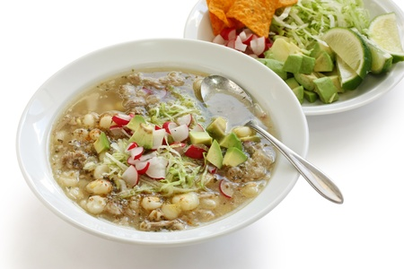
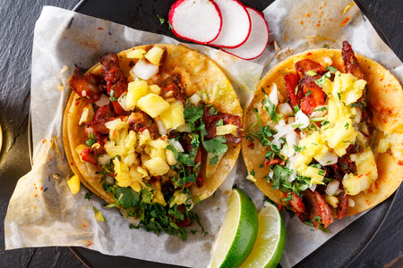

Favorritos:
Historial
El Pozole
Publicado el 05/06/2017
El pozole es un plato de México y Centroamérica, es una especie de caldo hecho a base de granos de maíz de un tipo conocido comúnmente como cacahuazintle, a la que se agrega, según la región, carne de pollo o de cerdo como ingrediente secundario.
Origen: Prehispánico
Lugar De Origen: México
Tipo: caldo

Horacio. El mejor pozole que he comido lo encontre en Acapulco, en la zona de la costera junto al hotel Presidente.

Clara. ¿dónde puedo obtener la mejor receta para preparar pozole verde?
Tacos al pastor
Publicado el 01/06/2017
Los tacos al pastor son una de las variedades de tacos más populares en la mayor parte de México, con desarrollo inicial en el centro del país. El modo de preparación de la carne es su característica más distintiva.
María. Los tacos al pastor son una copia de los tacos árabes poblanos.
Jacinto. Pues si son una copia son una copia mejorada! El sabor del adobo en los tacos pastor es insuperable.